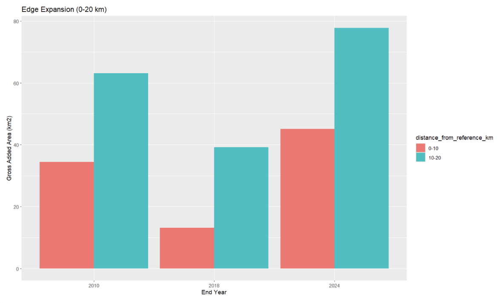
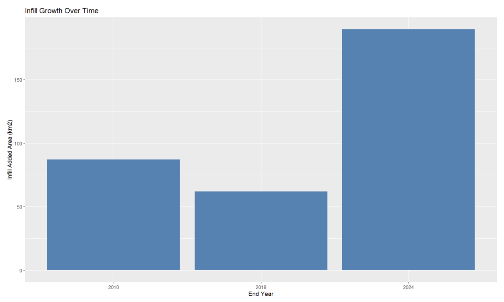
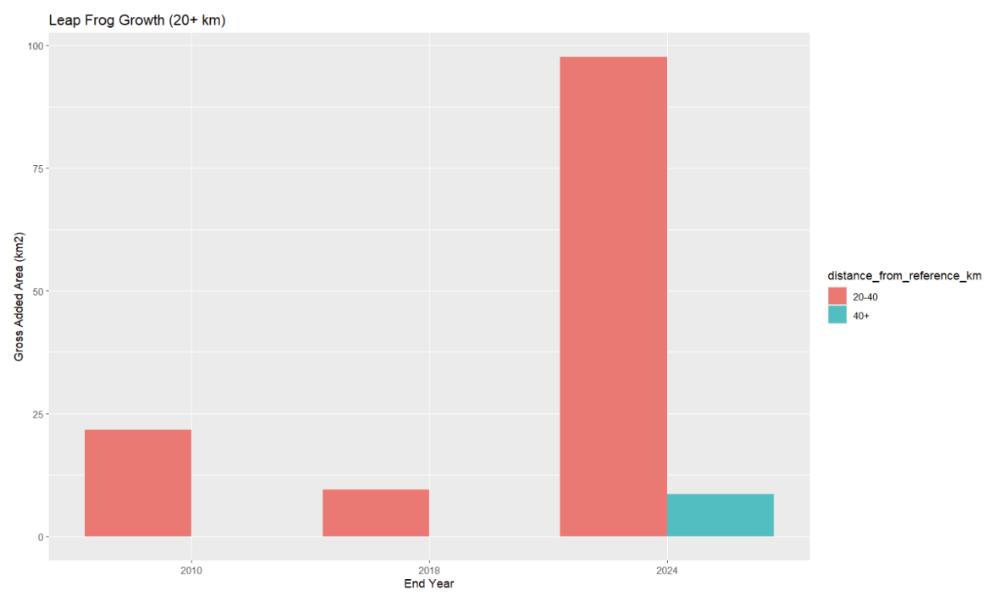
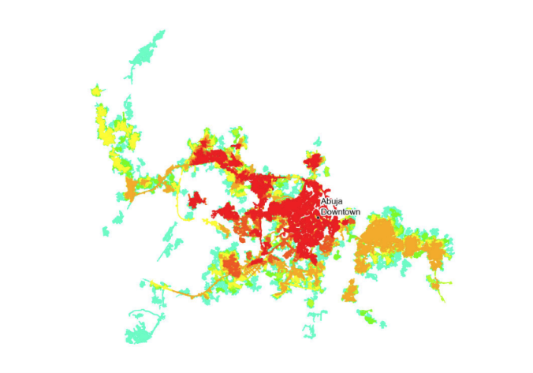

Gross added area: built-up growth within 0–20 km bands from the city reference point.
The edge expansion plot visualizes the evolution of Abuja’s urban boundary from 2010 to 2024. Expansion accelerated especially in the 10–20 km band, doubling in area by 2024 compared to a decade earlier. Population increases, availability of undeveloped land, and suburbanization all contributed, as new neighborhoods emerged on existing urban edges. This pattern typifies outward city growth, often in response to both demand and affordability, but stresses infrastructure and transit provision at the fringes. Notably, both the 0–10 km and 10–20 km categories rose, a signal of continuous peri-urban transition.

Infill: Developed area within prior built-up footprint.
Infill, or internal development, is the conversion of vacant parcels and gaps in the established city. From 2010 to 2024, Abuja’s infill area grew dramatically, spiking after 2018. Infill first grew slowly, but housing pressure, policy push for densification, and need for service efficiency caused a later surge. This method maximizes infrastructure use and curbs urban sprawl, though constrained by land use regulations and socio-economic realities. Much of Abuja’s post-2018 growth reflects a decisive strategy shift to utilize underused urban land, reducing pressure on outer greenfields.

Leapfrog: Urban land added at 20+ km from central reference point.
Leapfrog growth occurs when isolated urban patches arise far from the main city cluster. Abuja’s leapfrog development remained modest until 2018, after which outlying new clusters rapidly increased — especially in the 20–40 km zone. These arise due to land speculation, affordability, and opportunity outside controlled zones. While providing housing, leapfrog growth challenges planners, resulting in fragmented infrastructure, longer commutes and increased ecosystem impacts. By 2024, this process became a marked feature of the capital’s rapidly maturing urban landscape.

Map legend: Red = 2010 core, yellow = expansion/infill, cyan = newest/distant areas (2024).
This cumulative spatial map shows the multi-directional spread of Abuja’s built-up area. The dense red core is surrounded by significant intermediate (yellow) zones, with a halo of new (cyan) urban areas at the fringes and gaps. Major growth traces the west and northwest sectors, but expansions encircle the core, indicating both managed and outlying settlements. The pattern is both concentric and fragmented, underpinning the complex dynamics facing Abuja moving forward.